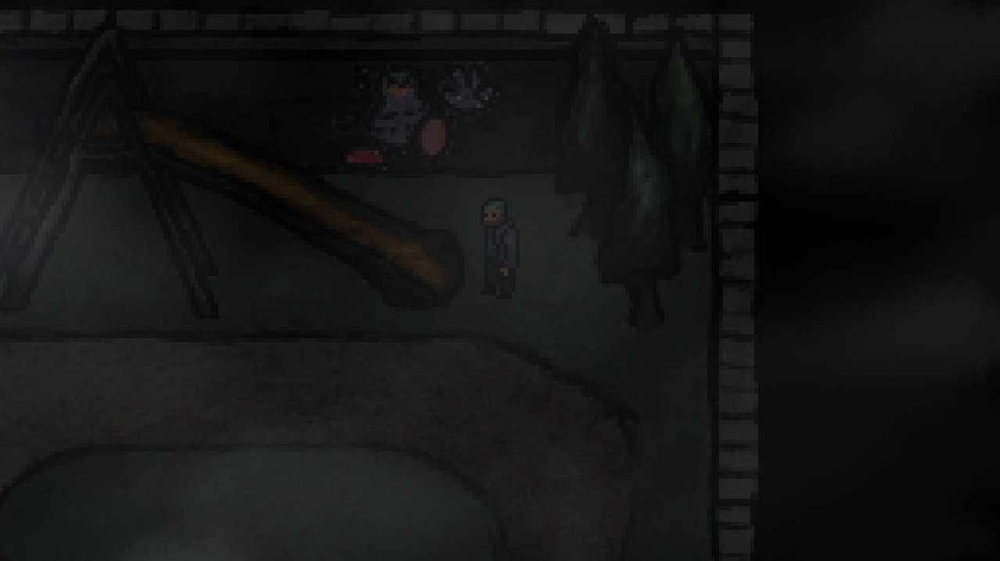
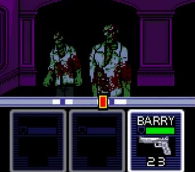
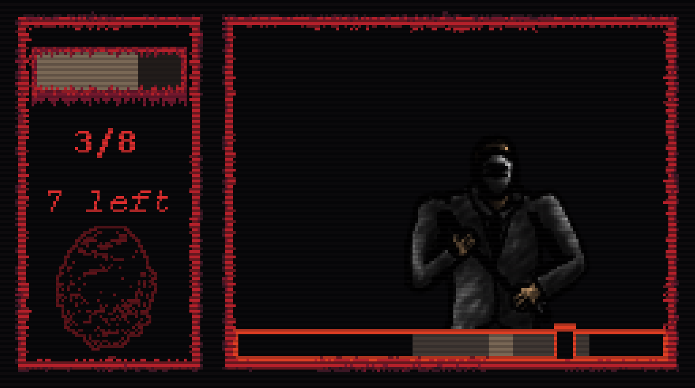

A Look Inside Remnants of Flesh
Hey, so you might've heard of my new game, Remnants of Flesh, and you might be wondering what the hell that thing even is, so I made this blog to clarify that.
First of all, I can't really say what it is since that would spoil some things probably, but I can go over the general idea of the gameplay.
The game's open world, so you can explore around the city and talk to the people there, and they can give you stuff to do in exchange for money.
It's also a top-down 2D pixel art game, as seen here.
^^ You can also see it has a pretty grimy art style. ^^
My main inspiration for the game was a Game Boy Color game called Resident Evil Gaiden, which is my favorite GBC game, so it's basically a spiritual successor to it, just open world, and with a lot of new mechanics.
^^ The main thing i'm inspired by is the battle system. ^^
Remnants' battle system is similar in how it works, but more complex, adding more items, a reload mechanic, dodging attacks, and quite a bit more.
^^ The battle system currently looks like this, although the enemy sprite will probably be changed for an upgraaded one. ^^
And without getting into too much spoilers (which is why I haven't discussed anything about the story), that's about it for the blog.
You'll start seeing more of Remnants soon though, so stay tuned, and have a good day!
written by astni for astni.com on 25/6/2024